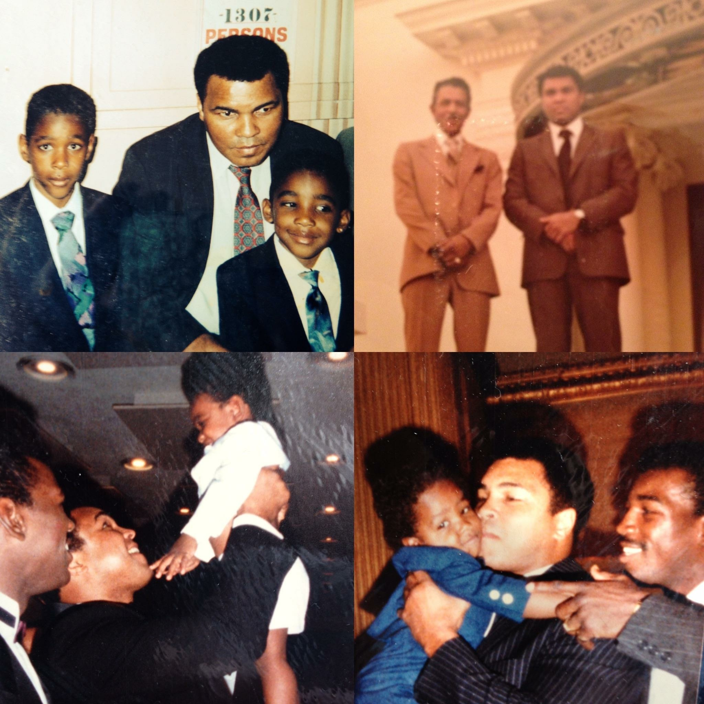

1 / 4

2 / 4
3 / 4

4 / 4
Saad Muhammad had a relatively short amateur career, consisting of only 20 amateur bouts. He won the Trenton (NJ) Golden Gloves in 1973 and turned pro the following year.Saad Muhammad began to box professionally in 1974, winning his first fight with a second-round knockout win against Billy Early. He posted seven more wins that year before suffering his first loss at the hands of Wayne McGee by a decision in six rounds.